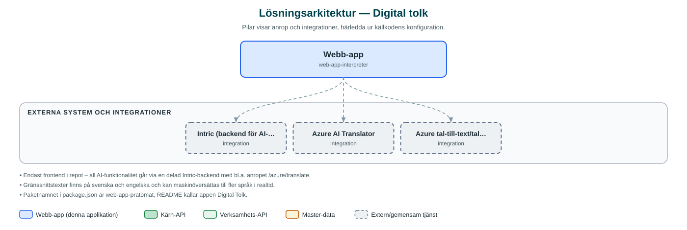

Digital tolk
En digital tolktjänst som låter två personer samtala på olika språk med automatisk taligenkänning, översättning och uppläsning.
Om applikationen
Digital tolk är en webbapplikation som gör det möjligt för två personer som talar olika språk att föra ett samtal utan mänsklig tolk. Varje deltagare väljer sitt språk, spelar in det den vill säga, och appen skriver ut och översätter yttrandet till motpartens språk. Översättningen kan även läsas upp med talsyntes.
Tjänsten är tänkt för situationer där kommunens medarbetare möter personer som inte talar svenska, till exempel i servicemöten. Innan samtalet startar visas en varning om att inte nämna personliga uppgifter, vilket visar att tjänsten är avsedd för enklare samtal och inte ersätter auktoriserad tolk.
Applikationen pekar mot en testmiljö och bedöms vara ett pilotprojekt snarare än en etablerad tjänst i drift.
Det här stödjer applikationen
- Tvåspråkigt samtal – Två deltagare väljer varsitt språk och turas om att tala; appen håller ordning på vems tur det är.
- Tal till text – Det som sägs spelas in och omvandlas automatiskt till text på talarens språk.
- Automatisk översättning – Texten översätts direkt till motpartens språk via Azure-översättning.
- Uppläsning – Översatta meddelanden kan läsas upp med talsyntes så att motparten kan lyssna i stället för att läsa.
- Integritetsvarning – Användarna uppmanas att inte nämna personuppgifter under samtalet.
Teknisk dokumentation
Nedan beskrivs hur applikationen är uppbyggd, vilka API:er den använder och vad som krävs för att driftsätta den. Informationen är härledd ur källkoden och dess konfiguration på GitHub.
Arkitektur

Applikationen är en webbaserad frontend (React 18, Vite, TypeScript, Tailwind CSS, sk-web-gui (inkl. AI-komponenter), i18next). Övriga integrationer som förekommer i koden: Intric (backend för AI-tjänster), Azure AI Translator, Azure tal-till-text/talsyntes.
Teknikstack
- Frontend: React 18, Vite, TypeScript, Tailwind CSS, sk-web-gui (inkl. AI-komponenter), i18next
API-beroenden
Inga prenumerationer på kommunens API-plattform hittades i källkodens konfiguration.
Konfiguration och driftsättning
- Miljöfil .env med VITE_API_BASE_URL (adress till backend), VITE_BASE_PATH och VITE_PORT
- Incheckad .env pekar mot backend-intric-test.sundsvall.se
Noterbart ur källkoden
- Endast frontend i repot – all AI-funktionalitet går via en delad Intric-backend med bl.a. anropet /azure/translate.
- Gränssnittstexter finns på svenska och engelska och kan maskinöversättas till fler språk i realtid.
- Paketnamnet i package.json är web-app-pratomat, README kallar appen Digital Tolk.
- Senaste ändring november 2024; versionsnummer 0.0.0 tyder på pilotstadium.
Källkod
Källkoden är öppen och finns hos Sundsvalls kommun på GitHub. I källkodsförrådet finns även instruktioner för att klona, konfigurera och starta applikationen i egen miljö.